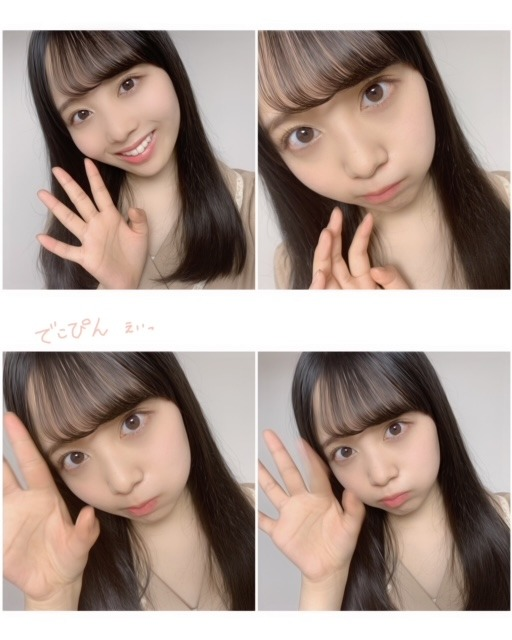
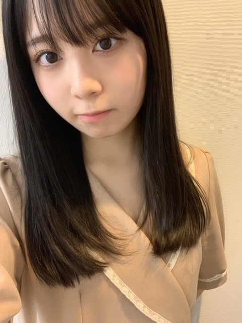

2020/1025Sun秋のワンピースで歩きたい10月。佐藤璃果
外は雲ひとつない晴れ
太陽の温かさ眩しさが
沢山詰まった青空が見えて、清々しい。
大切な思い出、いっぱいの夢、
詰まった毎日が宝物だと忘れぬように。
今日も、素敵な日になる事を願ってます。
こんにちは~
乃木坂46 （新）4期生 岩手県出身
佐藤璃果です。
冒頭の言葉の中に
今日の花言葉を含んでみました。
❁
こちら少し前にもブログで書いたお優しい先輩から頂いた服のシリーズ❁
実は久保史緒里さんから頂いたんです。
どれも可愛くて可愛くて
大事な仕事の時などに来ています！
半袖なので来年も沢山着ようと思います( ¨̮ )
ありがとうございます。
嬉しすぎます。。

急にでこぴんをし始めて沢山撮った写真
中田花奈さん、10月25日、
ご卒業おめでとうございます。
生のアイドルが好きで、中田さんとお話しできた事、本当に本当に嬉しかったです。
はじめての中田さんとの
お仕事がリモートという事で
色々大変な所もあったのに、うまく進めて下さって、まとめて下さって、楽しい時間にして下さった事ずっと忘れません。
テレビを見ている時に目を引く
中田さんのパフォーマンス中の
ダンスでの表現、表情、
醸し出す雰囲気まで本当に素敵で好きです。
素敵な先輩と少しでも同じ時間を過ごせた事、これからも大切にしていきます。
何故かは分かりませんが、今、
とても中田花奈さん！！
と叫びたい気持ちです。それぐらい中田さんへの感謝の気持ちが沢山なんです。
ご卒業おめでとうございます。
これからも素敵な人生である事を願っております。
~~~質問~~~
〇冬にやりたいこととかありますか？
お鍋を食べたいです( ˙༥˙ )
〇最近、秋になったことで街でさつま芋を見かけることもより多くなったと思うけど、毎日さつま芋は摂取してますか？？
はい！︎︎︎︎︎☺︎
今朝も焼き芋食べました~♡
〇最近バイト始めたんですが、まだまだ慣れなくてミスばっかりなんです、、、りかちゃんはバイトしたことありますか？応援してください〜
バイトした事ありますよ！！
私もミスしました。。
ミスしない人なんて居ないので、
大丈夫です。きっと。
これからです！！
いつもお疲れ様です！( ¨̮ )
〇璃果ちゃんは今になって高校の時のなんの時間が好きやったなぁーとか思うことある？？？
みんなが仲良さそうに平和に話してるのを
見ているときです︎︎︎︎︎☺︎
〇辛いの得意なの？？
大好きです~！！☀︎
〇璃果ちゃんの大事な思い出は何ですか？
毎日が大事な思い出になっていっています、
新しい出会いだったり経験だったり、
沢山あって限定できないなぁ
〇寒さには強い方ですか〜？
つ、強い気がする、、
ヒートテックは欠かせませんが。
〇最近寒くなってきたけどこの時期欠かさずやることとかってあるの？
もこもこ靴下を履いたり、、
白湯は年中無休なのですが、この季節は特に飲むと温まっていいですよね！
〇最後の写真が可愛すぎて、うっっってなりました。
持ってるのはマカロンのクッション？
〇最後のお写真のクッション！SR審査の時に見たような！違うかな？
うっっっっ！！
そうですマカロンですᙏ̤̫♡
多分大当たりです！
素晴らしい記憶力と、素晴らしい奇跡。
ありがとうございます。
〇雪にまつわる思い出はありますか？
幼少期は、
たくさん雪遊びしたよ~☃︎
〇気温はどのくらいまで下がるんですか？
氷点下が続く日が必ず毎年ありました(>_<)
〇ぶりっ子してるお写真ください(⸝⸝o̴̶̷᷄ ·̭ o̴̶̷̥᷅⸝⸝)❤︎
うっっっっ！
有難いリクエストありがとうございます。
いつか、、。
〇僕の晩御飯を決めてください。必ず食べます！
たまごりょうり
最近は家でもレンジでゆで卵しています。
〇璃果ちゃんは口癖とかありますか??
大丈夫かなー？？大丈夫？
〇冬はエアコン派？ゆかだんぼう派？
・冬はコタツ派？暖房派？
地元ではこたつ。
今現在はエアコンです！
〇岩手の雪ってふわふわしてるのー？？
していました！
雪に飛び込んだりしていました~❅*॰ॱ
毎回質問が多くて楽しいです。
番組についての感想もとても嬉しいです。
いつもありがとうございます！( ˙º˙ )
やっぱり冬はもこもこ~。
ぱっちりまつ毛
~~~~~~~~~~~~~~~~~~~
明日はるなぴです。
なんだか色んなバトンが飛んでいますね
瑠奈ちゃん・美佑ちゃんからの
"クリスタルプリンセスロッド"
奈於ちゃんからの"竹筒" バトン、
じゃあ私はお芋チップスバトンにしようかな
~~~~~~~~~~~~~~~~~~
寒くなってきたけど、皆さんお元気かな？
乾燥してるから沢山保湿します、、。
皆さんも乾燥にはお気をつけくださいね。
それでは
皆さんにとって
素敵な1日になりますように。

またね。
#37 りか
コメント(282)
前回は忙しくてコメント出来なくて、ごめんね
ポテトチップスのバトンってどんなバトンなんだろう(笑)
ポテチ(個人的？な略し方)をいっぱい繋いだ感じになるのかな？
想像するのだけで面白そうだね
最近は雨が降ることも多いけど、たしかに秋は乾燥するから、りかちゃんと保湿気をつけて
そういえば、来週で白石麻衣さんが卒業するんだね
私も何年も応援してた乃木坂の1期生が卒業するのは寂しいけど、4期生に乃木坂の未来を託せると思ったからこそ先輩方が卒業できたと思うと、これからの乃木坂が楽しみに感じます
とりあえず、ライブで輝くりかちゃんを見るのを楽しみにしてるし、リモートだけど、タオル揚げながらターコイズと桃色のペンライトで応援するから頑張ってー
じゃ、次はライブの感想を伝えます
ぱと@璃果坂より
久保さんと仲良さそうでいいですねぇ
これからも東北トリオ（絢音さんも入れて）に注目ですね(*^▽^*)
最近の晴れてるけど、肌寒のはきつい様な、過ごしやすいような、難しい日ですね。自分的にはすっごく過ごしやすいです。
最近イベントに行けなくて寂しい日々は続いてますが、楽しみはすっごい増します。
質問
なにかオススメのゲームとかありますか？今探してるので情報ください。
寒くなってきて…お腹が冷えて痛くなるぅ〜…(´Д｀)ﾊｧ…
ま、頑張ってく！！
そろそろ鍋の季節ですね！璃果ちゃんはなに鍋が好きですか？
ミーグリ璃果ちゃんもやって欲しいな、、
体調には気をつけてくださいね！
なんやかんやその髪型が1番好きな気がする。全部似合ってるけども！！
好きな先輩から服を貰えるなんて最高かよ！
に、似合ってるなんてお、思ってないんだからｯｯ!!(似合ってる)
ｸﾞﾊｯ!!(デコピンで吹っ飛ばされた人)
まつ毛だけでそんなに印象が変わるのね。
たかがまつ毛。されどまつ毛。(？)
璃果ちゃんも乾燥に気をつけやがれ！！
最後の写真好き(直球)
今の髪の長さめっちゃ良いと思う。
極論何でも似合うと思いますけども！！
質問
〇英語ってどうやったら得意になりますか？
英語だけどうしても苦手です。理科しか勝たん(文系)
その服くぼちゃんからもらったんや！
めっちゃ似合ってる！！
くぼちゃんもさすがのセンス。
でこぴん当たりましたー！！
でこぴん待機中の顔かわいすぎる。
でこぴんは恋の始まりです。笑
ちょっと、でこぴん聴いてきますね。
寒いからモコモコの季節やね。
モコモコりかちゃん、これからのシーズン楽しみにしてます！
風邪引かないようにあったかくしてね。
ではでは体調には気をつけて。
次のブログも待ってます。
いつもありがとう。
今日も一日お疲れ様〜
質問
予防接種の注射とかは平気なタイプ？
｢大切な思い出｣はカエデの花言葉なんですね！
花言葉を知ってからだとより綺麗に見えたりするのが素敵で、もっとたくさん知りたい！ってなります。
毎日調べてれば詳しくなれるでしょうか...？
-----------------------------
史緒里ちゃんからもらった服めちゃくちゃ可愛い！！！
天使が天使に服をあげてるの尊すぎますね...
また史緒里ちゃんとのお話たくさん聞きたいです！！
-----------------------------
璃果ちゃんのおでこ出し大好きなのでまた見れて嬉しい
いつも天使のように可愛い璃果ちゃんがおでこを出すと一気に“美”って感じになるのがやばいです。
可愛い！美しい！！ってなります。本当に好きです。
-----------------------------
質問です↓
・かなりの乾燥肌で毎年困っているのですが、璃果ちゃんおすすめの保湿方法はありますか？
・久保史緒里さんとは連絡を取り合ったりしていますか？
・璃果ちゃんはどうやってお花に詳しくなりましたか？
ぜひ知りたいです！
-----------------------------
もうすぐ白石さんの卒業コンサートですね。
配信ではありますが、自宅からたくさん応援します！！！
29日に誕生日を迎えるので、また璃果ちゃんと同い歳に戻れるのが嬉しいです。
19歳ってかなり大人な感じがしますよね...
できることならずっと18歳でいたかったです。笑
気温が低い日が続いているので、風邪などに気をつけてくださいね。
次回のブログも楽しみにしてます！
大好きです〜！！
あきひろ
今回も可愛い写真ばかりで癒されました
ありがとう
ライブでのパフォーマンス楽しみにしてるね
更新 おつりか 。。
いただいた 洋服も 似合うけど
黒髪が とても よくて 映えるなあ..
白のニットのパーカーの デコ出しも なかなか かわ
ちなみに 今は 埼玉の真ん中辺りに住んでるけど
うちくらいでも 冬場 マイナス５℃ くらいが
１月〜２月に 10日ぐらいある年も あるよ〜 。。
その頃は 一晩中 エアコンの暖房を入れっぱなし 笑
まあ 風邪引かないように 湿度も保って 健康にね..
りかに 。。
久保しーちゃんからいただいた
お洋服も実に似合っております。
久保しーちゃんと璃果ちゃん
これが江戸時代だったら二人合わせて
だ、伊達藩コンビと言われたかな。
また言っちゃった。ごめん(_ _;)
あとフード被ったお写真だけど
フジTVの久慈暁子アナに似てるかも。
璃果ちゃんの事も久慈アナの事も
応援 しているオジさんです。
ではでは。
つい最近まで暑いなぁなんて言ってたのにめっきり寒くなってきました(((ﾟ〰ﾟ)))
バイク乗りの僕は厳しい季節に突入です(￣▽￣;)
璃果ちゃんも体調をくずされませんようお元気でお過ごしくださいませ^^
今回のブログ写真のフード被ってる写真、好きです(*´ω`*)
可愛いです♡
それではこの辺で、名古屋のおっちゃんでした(^o^)/
久保ちゃんから洋服もらったんだね！りかちゃんにも似合っててよきです〜◎
からの突然のでこぴん！プラスでぷく顔にもなっててかわよい！えいっ！
ーーーーーーーーーー
さつまいもはもはや安定だね〜。
りかちゃん寒さに強いんか〜いいなぁ〜。寒くなってきたし、お鍋とか食べて温まらなきゃだね！
ーーーーーーーーーー
てっきりぶりっこの写真来るかと思った！笑。
さすがに無理強いはしないけど、いつかお願いします〜(*´ω｀人)
ブログの最初にあったでこぴんの写真がある意味ぶりっこみたいな雰囲気かも、笑
【質問】
コンビニに寄ったとき、ついつい買っちゃうものは？
(僕はホットスナックのポテトです)
次回のブログも楽しみにしてるね！(((o(♡´▽`♡)o)))
またね〜´ω`)ﾉ
りっちゃん！
ひろき(Yandji)です☺️
今日もおつかれさまー！
おれは、今日は朝からTOEIC受けてきた！！！
英語苦手やから辛かった
リスニング全然出来へんかった、、、
リーディングはそこそこいけたんかなぁ、、、
もっと勉強頑張らないといけないなぁと思った1日やった
これから、社会人として働くためにも大学卒業までに英語がんばるぞー☺️
また、ブログ内容についてコメント書くわ！
では、またねー
ひろき(Yandji)より
まず最初に！
"岩手の雪ってふわふわしてるのー？？"っていう
質問に答えてくれてありがとう(*´∇｀*)
やっぱ北の地方の雪ってふわふわしてるんだね~！
北海道に旅行しに行った時も
ふわふわしててびっくりした！！
私も雪に飛び込んだことある~！！！笑
柔らかいから気持ちいいよね( *´꒳`*)
東京の雪は固すぎて転んだら痛い( •̥ ˍ •̥ )
璃果ちゃんも東京での雪生活気をつけてね❅*°
┈┈┈┈┈┈┈ ❁ ❁ ❁ ┈┈┈┈┈┈┈┈
くぼしからもらった服めっちゃ可愛い！！♡
先輩からのお下がりって慎重に着ちゃうよね~
他に洋服もらった先輩とかいる？？
璃果ちゃんがもってるお洋服全部可愛いから
ブログで洋服紹介するのシリーズ化してほしいな☺︎
でこぴんしてる璃果ちゃんあざとい~❤︎
あざとい璃果ちゃんおかわりください！！！
┈┈┈┈┈┈┈ ❁ ❁ ❁ ┈┈┈┈┈┈┈┈
次ブログ更新するときには
まいやんの卒コンが終わってるね…
璃果ちゃんがどんなパフォーマンスするか
まいやんがどんなふうに送り出されるか
どんな卒コンになるか
とっっても楽しみ！！！！！
画面越しだけどいっぱい声援送るね☺︎
リハーサル大変だと思うけど
本番は精一杯、璃果ちゃんらしく
頑張ってねﾌﾚｯ*⸜( ॑꒳ ॑ )⸝*ﾌﾚｯ
┈┈┈┈┈┈┈ ❁ ❁ ❁ ┈┈┈┈┈┈┈┈
【質問】
・璃果ちゃん家のこたつにはみかん乗ってる？？
・今年もあと2ヶ月！今年のうちにやりたいことある？？
・まいやんとの思い出聞かせてー！！
質問答えてくれてありがとう(*´˘`*)♡
また答えてくれたら嬉しいな❀
コンサート頑張ってね！(๑•̀ •́)و✧
また次のブログ更新待ってるね~⸜❤︎⸝
*⑅୨୧まなみん୨୧⑅*
今日の誕生花、カエデですかね？
カエデって聞くと佐藤楓さんを思い浮かべますね。誕生日は違いますけどf(^_^;
ついに中田さん卒業ですね。
中田さんが卒業した後でも大丈夫だって思ってもらえるように、遠慮せずに自分を出していって、乃木坂のメンバーとして美しい変化を見せていってくださいね。
では、また何かあったらコメントさせていただきますね。m(_ _)m
大丈夫かなー？？ 大丈夫？ ..って 聞かれたら
食い気味に 返事するよ 笑 。。
りかに 。。
体調悪くしないで頑張ってください
マネージャーかつとても良かったです。
次回のノギザカスキッツはどうなるのでしょうか？
まだ終わらないで欲しいと心から思っています。まぁ、終わると決まったわけではないのですが…
気がつけばオンラインライブが迫っていますね。
不安なこともあるかも知れませんが、佐藤さんが楽しめる事を祈っております。
最後に質問を１つ。
僕は漫画が好きなのですが、好きな漫画やおすすめの漫画はありますか？少年漫画、少女漫画、どちらでも大丈夫です。
お答えいただけますと幸いです。
気温が安定しない日が続いておりますが、体調にはお気をつけくださいね。
快晴な日って気持ちもスカッとスッキリするよね。
しかも気温もちょうどいい秋晴れの日とかね。
いいよねー。
質問
・理想の身長は何センチ？？
・疲れた時は、どうやってリフレッシュしてる？
りかちゃんバイトしたことあるんだ！！私も今バイトで悩みばっかだったけどりかちゃんの言葉聞いて安心した(’･_,’)♡ いつか握手とかライブできるようになった時いっぱい会いに行けるように頑張るね！！！
また次のブログたのしみにしてます！！！
もらった服をすでに着こなしている…かわいい…
これは思い出になるなーってことが意外と記憶に残ってなかったり、すぐ忘れそうなことが思い出になったりするから毎日気が抜けない！笑
質問
・乃木坂の教科書で好きな歌詞は？
質問：いつかはバンジージャンプやってみたいですか？
久保ちゃんからもらった服かわいいいいい！
写真たくさんありがとうね〜
次まで待ってるね〜
じゃあ今日はオムライスにしよーかなー
岩手出身の璃果ちゃんには
東京の寒さに物足りなさを感じちゃうのかな？w
卒業続きで寂しいねぇ…
璃果ちゃんはあと10年は卒業しないでね！(笑)
質問
○冬にオススメの乃木坂の歌は何ですか？
なんか最近は20℃前後がどんくらいなのかわかんなくて
外出る時服装ミスってばっかなんよねー
質問返してくれてどうもありがとう！
好きが増しましたw
何個か質問
僕、気疲れするのが嫌で最低限以上に人に気遣うのとか、愛想笑いするのが苦手なんだけど、そんな自分でいいんだろうかねー
お笑い好きの林瑠奈ちゃんとお笑いの話をしたりするの？
今日はかなりんラストの日ですね。花奈りんと言えばやっぱりダンス。私はダンスは詳しくないですが、ライブでは、かなりんは目立つ存在でした。なんだかまだ卒業すると言う実感がわきません。
璃香ちゃんも日々の大切さ、良く分かっていますね。私は56歳ですので、日々の大切さは一層大事に思います。
一生懸命頑張る日も疲れて少し休む時間も、皆大切。
ではまた。
りかたん更新ありがとう！！
最近寒くなってきたね~、、 元気にしてますか？
私は風邪ひきそうなくらい寒いです笑 でもりかたん東北だからもっと寒いのかな~、、風邪には気をつけてね！！
お写真可愛いです！！眉毛だしてるのすき！！
質問！
ノギザカスキッツでの裏話、教えてください~！！！
だいすき！ 【な な り か 165】
な な り か (夏希)より
質問します！！
東京の寒さは岩手に比べたらそうでもない？
僕は寒いのめっちゃ好きなので東北の方の寒さをたいけんしてみたい！
言葉の中に今日の
花言葉を含んでみたの？
なんだろう…
もしかして…
「､」？
ﾝﾅﾜｹﾈｪﾀﾞﾛ!!(oﾟ∀ﾟ)=○
今日は穏やかに過ごしました。天気も良くてお菓子買いにドラックストアまで歩きましたが、心地よかったですね。
今日の誕生花を調べました「楓」ですね、ここで普通ならでんちゃんの話とか紅葉の話とかするんじゃないかなと思うんですけど、どうも花より団子派なのでしません、ホットケーキにはバターとハチミツで小さい頃は食べていたんだけど、大きくなって、メープルシロップの独特の甘さを知ってしまったら、メープルシロップ派になりました、でもメープルシロップも希少になってるらしいので、メープル風味のはちみつで食べてます。普段電子レンジで出来るやつ食べてますけど、粉から作った方が美味しそうですよね。
自分もエアコンと電気ストーブで暖房してます、乾燥するので湿度にも気を配ってそのほっぺをキープしてくださいね。ほっぺは大事です。
おやすみ
最近、めっちゃ寒くなってきたね…布団が欠かせない時期だね。
前のブログでは、ノギザカスキッツのコメントしてなかったから、ここで言います。璃果ちゃんの喝、めっちゃ可愛いし、あの言葉でめっちゃ元気もらいました！これからも大学の講義とか頑張ります！
では、今回は結構短いけど、この辺で。また五日後ね！まいやんの卒コン頑張ってね！
本当は毎日書きたいのに…最近大変で大変で…
ごめんね、泣
実をいうと陸上部のキャプテン任されたり
文化祭の企画を作らなきゃいけなかったり、模試があったり…
これからもコメントペースは落ちるかもだけど
璃果ちゃんのことはずっとずっと大好きです。
久保ちゃんから洋服をもらえるとは！
先輩から好かれている証拠ですかね！璃果ちゃんの性格が
愛されやすい性格なんでしょうね、ちなみにオンラインミート
璃果ちゃん参加まだしてないから本当に早く会いたいなって
思うな〜もしそういう機会があれば絶対行くね。
♪質問♪
1.最近陸上部のキャプテンになって、いつもキャプテンなんだからってすごい怒られるんですけど、キャプテンはそういうので怒られて当然なのかな？
2.璃果ちゃんは最近オンラインで何かやりましたか？
3.鬼滅の刃はもうみました？
4.最近断食って気になって、璃果ちゃんはしたことある？
今日もありがとう！またコメント出来るようにするね！
明日も頑張りましょうね！
チャァオ〜〜〜!☆彡
りかちゃん❕❤️❤️❤️笑顔・・・・・・
お芋チップスバトン❕・・
ん❕❔❤️❤️❤️
・・・駄目です❕❤️❤️❤️笑笑
ブログリレー１周している間に〜〜〜⤴️⤴️⤴️
めっちゃ⤴️⤴️⤴️
カビが生えます❕❤️❤️❤️❤️❤️笑笑
(＠＾▽゜＠）ゞ❤️❤️❤️
❇️❇️おすまし！⚜️❇️⭐彡
久保ちゃんからもらった服めっちゃ似合ってるしかわいいで！
毎度毎度かわいい写真ありがとう！また明日から1週間始まるけど
璃果ちゃんが頑張ってるから自分も頑張れると思って課題レポートを
終わらそうと思う！笑笑
質問
最近起きた小さな幸せはある？
いろいろ話せる先輩はいる？
新しく始めたいことはある？
コメントする

PROFILE
新4期生リレー
202104
| SUN | MON | TUE | WED | THU | FRI | SAT |
|---|---|---|---|---|---|---|
| 1 | 2 | 3 | ||||
| 4 | 5 | 6 | 7 | 8 | 9 | 10 |
| 11 | 12 | 13 | 14 | 15 | 16 | 17 |
| 18 | 19 | 20 | 21 | 22 | 23 | 24 |
| 25 | 26 | 27 | 28 | 29 | 30 | |

いつもコメントしている
janpoi(じゃんぽい)だよ！！！
前のブログ何故かコメント送れんやった、、、(￣▽￣;)
初めてやったけ原因がわからんけど乁(・▅・)厂
今週はかなりん、まいやんが卒業するけ
寂しくなる日があるけどみんなで送り出そうね！！
〜質問〜
〇卒業する先輩らとの1番の思い出は？
〇寒い時に
重ね着か暖かいものを飲食かで選ぶなら
どっちをとる？
〇りかちゃんはスキーかスノボーは得意？
今回もブログ更新してくれてありがとう〜
次もたのしみにしているね！
体調管理に気をつけて頑張ってね